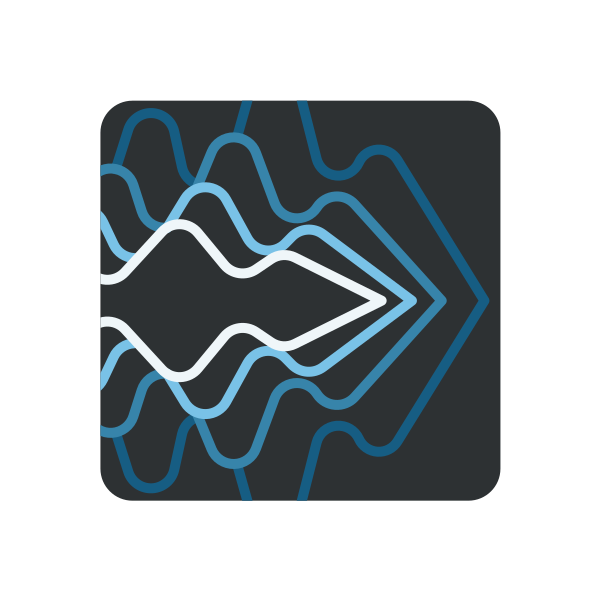
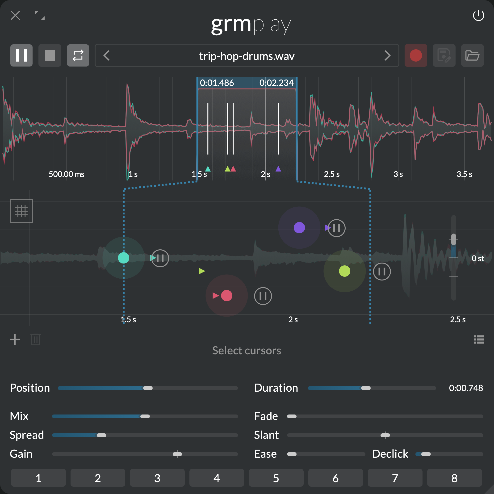
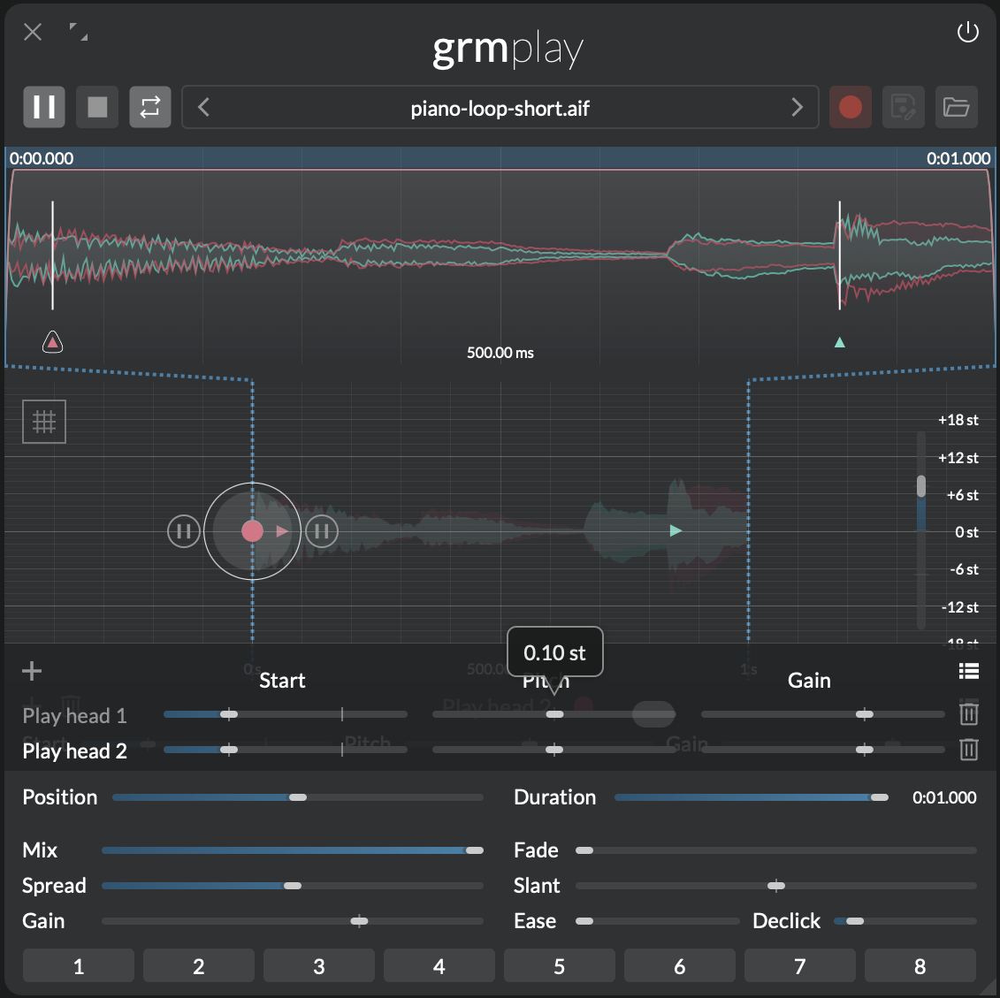
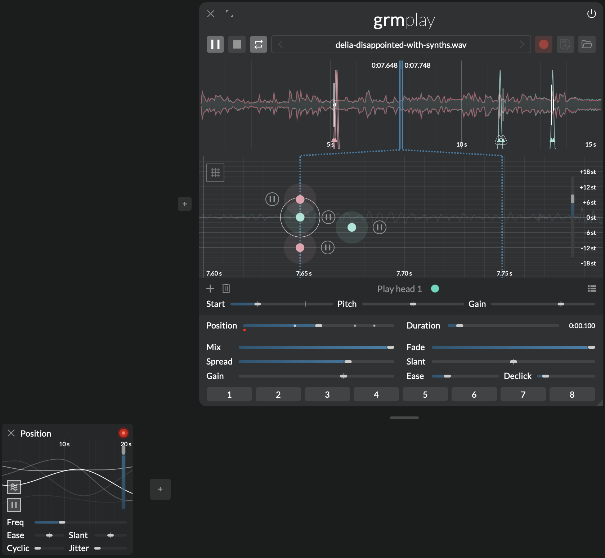
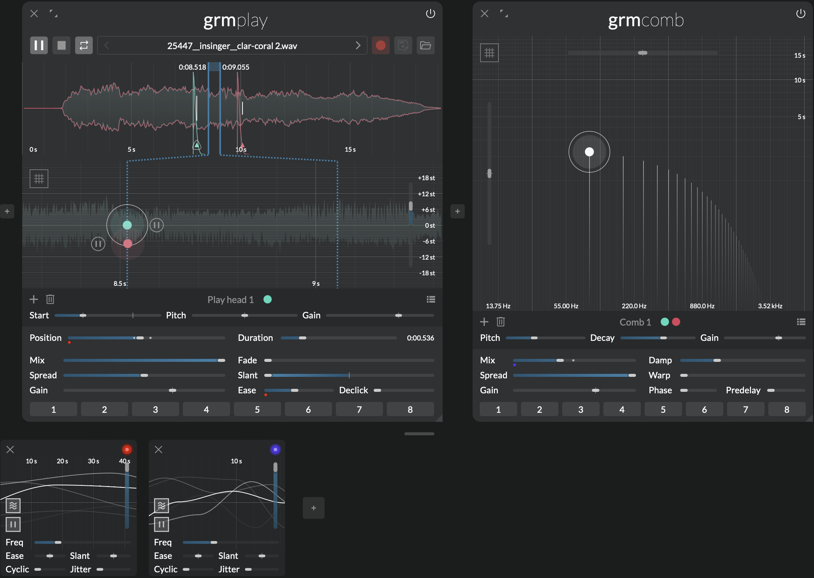
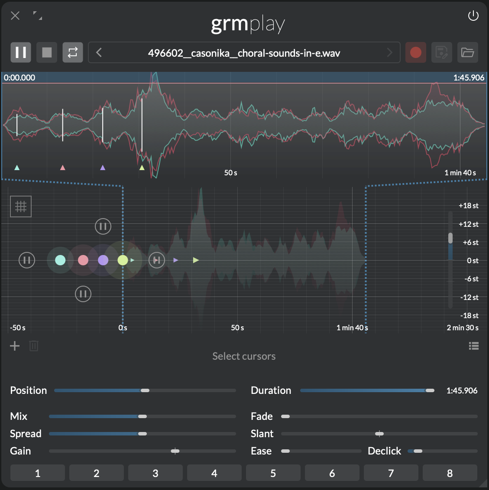

Audio file playground
 Play

Simple file playback, turned into an instrument. Play is a virtual tape recorder with creative feature: multiple playheads, versatile playback region, envelope control, and built-in recording functionality allowing input sampling or even resampling your own patches. Endless sound material exploration without cluttering your desk with snippets of magnetic tape.
Features
- Multiple playheads with adjustable pitch and position
- Built-in recording into a temporary buffer, saveable to file
- Looped and single shot playback
- Global and individual transport controls for each playhead
- Playback in forward and reverse direction
Context
Spliced tape, varispeed and reversed reels: in the hands of musique concrète composers, the reel-to-reel recorder became an instrument, turning sound itself into material for playful experimentation. Play taps into this history and brings it to modern standards, while treasuring the joy of experimenting.
Once a file is loaded, place one or several readheads. Each readhead is represented by a cursor, that has independent pitch, playback position and gain. Its position is confined to a playback region (in blue in the region overview).
An envelope is applied while reading the region (Fade, Slant). In single-shot playback, playheads start fading in at the beginning of the region, then fades out again at its end. In looped mode, it determines crossfade: as soon as fade out starts, the region starts playing again from the start. With Fade at 100% the playback continuously overlaps.
Play can load mono, stereo and multichannel audio files. If the number of channels in the audio file don't match the number of channels of the module fanning and folding is employed to distribute the channels to your outputs.
Controls
Toolbar
- Play/pause: Global transport state. Toggles playback of all playheads, stopping or resuming playback from their last position. This parameter has as many independently-modulatable instances as there are playheads (see Modulation).
- Stop: Immediately stops playback of all playheads, and reset to their start position.
- Loop/single shot: When toggled on, playback loops until paused. When toggled off, the region plays once until Play/Pause is toggled another time.
- File browser: Shows the currently loaded file. Click to bring up a list of audio files in the same directory. When hovered, shows file information in the info area.
- Record: Records the input of the module into a temporary buffer (max. 1 minute).
- Save: Save temporary buffer to file.
- Open file: Opens an audio file.
Tip
Play/pause, Loop and especially Record are all modulatable!
Region overview
The region overview shows a view of the entire file, the playback region and the envelope. Click-and-drag the waveform to zoom and pan. The blue translucent bar at the top shows the playback region. Vertically drag it to shrink/enlarge the region, horizontally drag to move. Additionally, start and end vertical bars can be adjusted by dragging. Holding down alt while dragging anywhere on the waveform allows to define a new playback region.
Cursor area
Click to add a playhead; double-click a playhead to remove it.
- Quantize button: Click to quantize all playhead pitches to the closest semitone.
- Rate: Playback speed, relative to nominal file speed. Negative means reverse. This parameter has as many independently-modulatable instances as there are playheads (see Modulation).
Each playhead has four controls:
- Play/Pause button: Playhead playback state. If global playback is enabled, this control is inverted.
- Start (X axis): Playhead position after it ended playing, or the Stop button was pressed. If the start position lays outside of the playback region (less than 0% or more than 100%) playback will start with a delay.
- Pitch (Y axis): Playhead playback speed, in semitones relative to nominal file speed.
- Gain (Z axis): Playhead output gain.
Global controls
- Mix: Crossfades between the input signal (0%) and the playheads signal (100%).
The following parameters have as many independently-modulatable instances as there are playheads (see Modulation).
- Position: Center position of the playback region.
- Duration: Duration of the playback region, as a percentage of the total file length. The actual duration in seconds is indicated next to this slider.
- Spread: Channel-locality of each playhead. At 0%, each playhead reads only the channels it is assigned to (see the global Spread section); at 100%, each playhead reads all channels of the file.
- Gain: Output gain of all playheads. Added to the gain of playhead.
- Fade: Combined length of the fade-in and fade-out envelope. In loop mode, it determines the cross fade time.
- Slant: Ratio of time spent fading in vs. fading out. At 0% the attack is instant and the entire time is used for the fade out; at 50% the envelope is symmetric; at 100% the envelope is slanted towards the right.
- Ease: Easing curve of the applied fades, from linear (0%), to abrupt (100%).
- Declick: Minimum time of any fades. A value of 0 allows clicks; anything above quickly fades any transition: start, stop, (cross-)fade.
Tips and tricks
Note
Dragging an audio file from Ateiler's own patch recorder or the system’s file explorer anywhere into the processor chain creates an instance of Play with the file in place.
Phasing

To achieve a phasing effect — as popularized by Steve Reich — place two playheads at the same exact spot. Changing the Start of one playhead introduces a fixed time gap between both heads; slightly changing Pitch instead gradually desynchronizes both playheads. Hold ⇧ while dragging for fine control. This effect is easiest explored with short rhythmical loops.
Granular playback

Try repeating tiny segments — or grains — of audio (typically 1 to 100 milliseconds), and modulating the region. Set the Duration to a very small value. Add a generous amount of Fade to smooth out the grains. Add several playheads with different pitches to create a chord. Reset the position to 50%. Now add a modulation to Position, Peak to create a constant ascending slope, or Agitation for unexpected scrubbing. Adjust its time to vary the granular scrubbing speed.
Percussions with drone material using fades

Using envelope shapes it is easy to reappropriate drone-y material for percussive sounds. Create one or more playheads, adjust the duration and bring Slant to 0%. Adjust Ease to make a fast decay. If you want sharp, clicky attacks set Declick to 0ms. Optionally modulate Position to get more variety. Tip: this might pair nicely with Comb further down the chain.
Multichannel cannon

When a playhead's Start (X axis) parameter is less than 0% it will start out muted until it reaches the playback region. This effect can be exploited to create cannons. Place several playheads in a row, spacing Start at regular intervals before 0%. Make sure all Pitch are equal. Now, when you press Play, one playhead after the other will reach the the playback region with the predefined delay. Once they reached the end of the region they will loop and start from the beginning, creating a cannon.
If you want to play the cannon in reverse, move all the playheads so their Start is after the 100% marker, and set Rate to -1x.